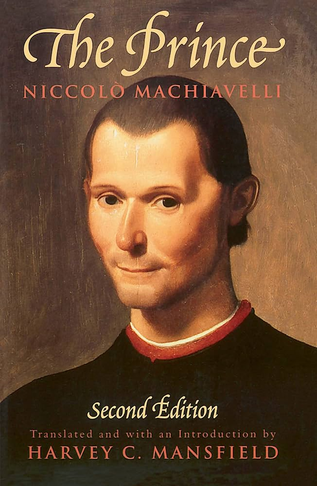

Outside of my academic pursuits, I enjoy a variety of hobbies that help me relax and recharge.
These activities provide a healthy balance to my studies and allow me to explore different interests.
Each of these hobbies contributes to my personal growth and provides inspiration for my creative projects.
I have a deep appreciation for storytelling in various forms. Here are some of my all-time favorites that have shaped my perspectives.
These works have influenced my thinking and continue to inspire me in different ways.
Monster by Naoki Urasawa (1994-2001)
A gripping psychological thriller following Dr. Kenzo Tenma, a brilliant neurosurgeon who saves a young boy's life, only to discover years later that his patient has become a dangerous serial killer. The story explores themes of morality, responsibility, and the nature of evil.

The Prince by Niccolo Machiavelli (1532)
A seminal treatise on political power, leadership strategy, and statecraft. Machiavelli's pragmatic approach to governance and power dynamics has influenced political thought for centuries.
